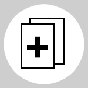

Ves a l'enllaç, enfoca amb el mòvil qualsevol de les imatges. En alguns casos
hi haurà elements 3D afegits a l'escena. Si apareix el botó Info
és que es
pot accedir a informacions addicionals sobre la fotografia i si apareix el botó + fotos
 veuràs més fotos del film.
Fotògrafs
Guia
1
2